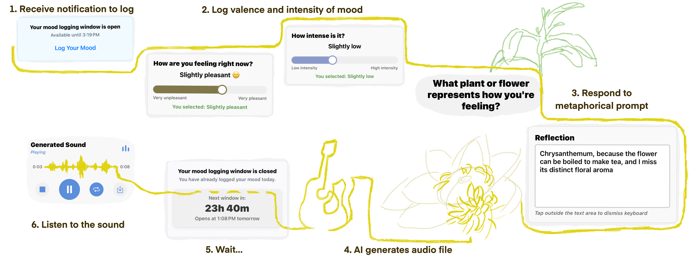

Audible Feelings
Summer 2025–Summer 2026

What might a mood-journal entry sound like? Audible Feelings is a mood-tracking and micro-journaling app that turns short, metaphorical reflections into AI-generated sound. I designed and developed the app, exploring how sound might invite reflection on everyday feelings.
After logging their mood, a person responds to a metaphorical prompt such as “What plant or flower represents how you’re feeling?” A text-to-sound model translates their response into an eight-second audio clip. The sound becomes available after they log another entry the next day. Drawing on slow technology, this delay is designed to invite anticipation and some distance from the feeling that prompted the entry.
We explored the app through first-person use and a diary study with seven participants over the course of six weeks. Participants used two sonic journaling apps for two weeks each, including Audible Feelings, and recorded voice-memo reflections along the way. The study also included interviews and a group co-design workshop. I co-led the participant study and contributed to qualitative analysis and writing. Our NordiCHI late-breaking work paper reports preliminary observations from the Audible Feelings portion of the study. To learn more, you can read our paper here.
Related Publication: Ziheng Lyu and Jordan Wirfs-Brock. 2026. Audible Feelings: Exploring the Role of Generative Sound in Reflective Mood Journaling. In Adjunct Proceedings of the 14th Nordic Conference on Human-Computer Interaction (NordiCHI ’26 Adjunct), October 03–07, 2026, Vaasa, Finland.
A full paper on the broader diary study is currently under review.